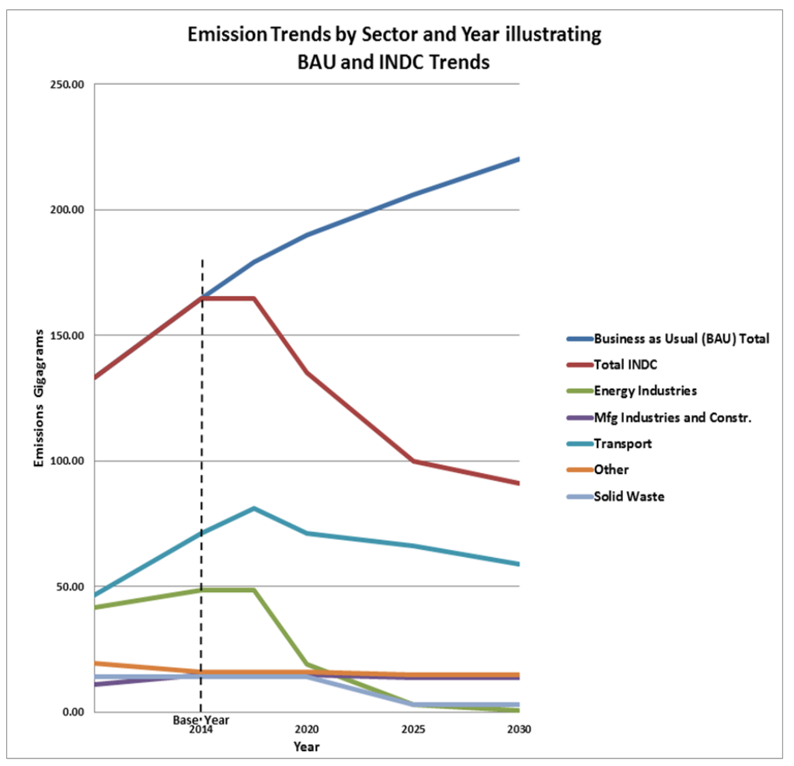

Communicated to the Secretariat of the United Nations Framework Convention on Climate Change (UNFCCC) on the 30th September, 2015
The Commonwealth of Dominica is committed to the successful conclusion of negotiations under the AdHoc Working Group on the Durban Platform for Enhanced Action (ADP) in order to adopt, at the 21st meeting of the Conference of Parties (COP21) in Paris, a new legally-binding agreement under the United Nations Framework Convention on Climate Change (UNFCCC) appropriate and fair to all Parties, which will come into effect and be implemented from 2020 onwards. Dominica hereby communicates its Intended Nationally Determined Contribution (INDC), in accordance with the relevant paragraphs of Decisions 1/CP.19 and 1/CP.20, towards achieving the ultimate objective of the Article 2 of the Convention, which provides up-front information to facilitate the clarity, transparency and the understanding of the INDC. Dominica is also pleased to provide additional accompanying information relating to mitigation, adaptation planning/management and support for implementation.
Dominica as a small island developing State is vulnerable to current and ongoing impacts from climate change. Facing ever escalating social, environmental and economic costs from such impacts, the priority of the Government of Dominica is to implement the comprehensive Strategic Program for Climate Resilience contained in the Dominica Low Carbon Climate Resilient Strategy (2012). For Dominica, there is little distinction between adaptation and mitigation measures – an integrated response is being implemented to build climate resilience in vulnerable communities, while enabling Green Growth through the transition to sustainable energy technologies. Recognising Dominica’s common but differentiated responsibility and limited capabilities to address climate change, Dominica commits to progressively reduce total gross greenhouse gas (GHG) emissions below 2014 levels (164.5 Ggs est.) at the following reduction rates:
17.9% by 2020; 39.2% by 2025; and 44.7% by 2030.
By 2030, total emission reductions per sector will be as follows:
Benefiting from sound management practices, Dominica forests will continue to sequester 100 Ggs of national GHG emissions on an annual basis during the period 2020 to 2030. The commercial development and continued harnessing of Dominica’s geothermal resources will, from 2025 onwards, enable the country to export significant amounts of renewable energy (estimated to exceed 200 Ggs annually) to the nearby French Territories of Martinique and Guadeloupe, thereby contributing to global efforts to reduce GHG emissions.
This contribution is conditional upon receiving timely access to international climate change financing, technology development and transfer, and capacity building support for priority adaptation and mitigation measures. Dominica’s INDC will remain provisional pending confirmation of timely access to international climate change financing, technology development and transfer, and capacity building support for priority adaptation and mitigation measures detailed in this INDC. Dependent upon COP21 outcomes, Dominica reserves the right to revise the INDC.
Dominica has always been in a vulnerable position economically, socially, culturally, and environmentally given its susceptibility to natural disasters and its ecological and economic fragility. Vulnerability to climate change in Dominica, like many Small Island Developing States (SIDS), is aggravated by external pressures affecting its resilience and adaptive capacity such as terms of trade, impacts of globalisation (both positive and negative), financial crises, international conflicts, external debt, externalization of the benefits of foreign direct investment at the expense of the local population, and internal local conditions such as population growth, reliance of fossil fuel imports, incidence of poverty, inadequate social capital, unemployment, limited resource base for economic development, reduced social cohesion, and a widening gap between poor and rich, together with the interactions between them. It is widely acknowledged that climate change exacerbates impacts from natural disasters with enormous human, environmental and economic costs.
|
´Flood swamped villages, destroyed homes and wiped out roads. Some communities are no longer recognizable…´ |
Recognising the threats posed by climate change, Dominica has, over the last two decades, undertaken a number of initiatives to respond to this threat. Dominica has established a strong track record on climate change adaptation, and in this regards was one of the first countries in the Caribbean region to adopt a National Climate Change Adaptation Policy (2002). Dominica was one of the few countries chosen to pilot adaptation measures under the Special Program on Adaptation to Climate Change (SPACC), and pioneer the development of a strategic programmatic approach to building climate resilience under the Pilot Program on Climate Resilience (PPCR). In 2012, the Cabinet-approved Dominica Low Carbon Climate Resilient Strategy was developed through broad-based stakeholder engagement and input, with support provided by the Climate Investment Funds (CIF). Additionally, as a collaborative initiative between the SPACC program and the Global Environment Facility (GEF) funded Sustainable Land Management (SLM) project, Dominica has pioneered: (a) the vulnerability mapping and “climate proofing” of National Parks Management Plans; and (b) community-based vulnerability mapping and the development, through community engagement and input, of community adaptation plans. Methodologies for adaptation planning and management developed by Dominica under these programs have been promoted as models of best practices by a number of international agencies.
In the global context, until around 2005 Dominica´s contribution to global greenhouse gas emissions was nil, due to the small size of the country's economy and population, combined with the ability of the large expanse of the country’s forested areas (comprising 63% of the total land area) to sequester greenhouse gases at levels that exceeded national GHG emissions from anthropogenic activities. Nonetheless, Dominica is a country committed nationally and internationally to addressing climate change. Due to the exceptionally high level of vulnerability to climate impacts, Dominica´s national priority is to enhance community, ecosystem and national resilience to climate change and natural disasters, including through the implementation of viable sustainable energy and other mitigation measures, which reduce reliance on imported fossil fuels, while building local resilience, capacity and self-sufficiency. In this regard, the harnessing of the country’s geothermal resources over the next decade will considerably reduce Dominica’s reliance on imported fossil fuels as the principal source for electricity, and will liberate considerable resources spent on fuel imports which can be directed to priority adaptation measures to build resilience in vulnerable communities and sectors. Continued expansion of Dominica’s geothermal resources from 2025 onwards will enable the country to export significant amounts of renewable energy to nearby countries, thereby contributing to global efforts to reduce greenhouse gas emissions.
| Parameter | Information | |
|---|---|---|
| Period of implementation | Beginning in 2016 and ending in 2030 | |
| Type of commitment | Absolute reduction from base year emissions | |
| Base year | 2014 | |
Scope and coverage |
Emissions reduction impact | Emissions will be reduced by 44.7% from 2014 levels. |
Sectors and conditional targets (Conditional upon receiving timely access to international climate change financing, technology and capacity building support) |
|
|
| Greenhouse Gases (GHGs) | Carbon Dioxide (CO2), Methane (CH4), Nitrous Oxide (N2O), Hydrofluorocarbon (HFC) | |
| Geographical boundaries | Whole country | |
| Methodological approaches for estimating anthropogenic greenhouse gas emissions and removals | This INDC was prepared using the IPCC 2006 greenhouse gas inventory methodologies, and GHG emissions intensity factors from the Carbon Trust. | |
| Planning process | This INDC has been developed through broad-based stakeholder consultation and input, and builds upon key national policies and strategies including:
|
|
| Intention to use market-based and nonmarket-based mechanisms to meet target | Dominica intends to introduce market-based mechanisms to promote energy conservation/efficiency and reduce greenhouse gas emissions from the transport sector principally through incentives to promote the import of hybrid vehicles. | |
| Assumptions and Methodological Approaches | ||
| When calculating or making reference to GHG emissions, the methodologies used to estimate those emissions in relevant sectors correspond to the 2006 IPCC Guidance for Conducting National Greenhouse Gas Inventories and assume Global Warming Potential (GWP) values for a residence period in the atmosphere of 100 years pertaining to the Second Assessment report of the IPCC. Carbon sequestration potential and emissions from the land use, land-use change and forestry (LULUCF) sector, used the FAO's Global Forest Resource Assessment for Dominica and the 2003 IPCC Good Practice Guidance for LULUCF. | ||
Dominica is located at 15 degrees North and 61 degrees West, occupying a central position in the eastern Caribbean archipelago. The country is bordered by the French territories of Guadeloupe and Martinique to the north and south respectively. The island is approximately 750.6 square kilometers and is the largest in the Windward and Leeward groups of the Eastern Caribbean.
Figure 1: Map of Dominica
Dominica is volcanic in origin and is characterized by very rugged and steep terrain with approximately ninety miles of coastline. The northern half of the island is dominated by the country’s highest summit, Morne Diablotin, which is the highest and largest volcano in Dominica, and the second highest mountain in the Eastern Caribbean, measuring 22 km x 18 km at its base and towering to a height of 1447 meters. A chain of mountains extends from the islands center to the south, and the topography is characterized by a number of ridges and steep river valleys with gently sloping lands being restricted to narrow coastal strips, particularly in the center and northeast of the island. The islands volcanic natural history remains evident in continuing seismic activity, and in scenic attractions such as the Valley of Desolation and the Boiling Lake, which together with dense forests populated with an abundance of natural lakes and waterfalls, provide the basis for a growing eco-tourism industry. Dominica has a forest area of 45 000 hectares – more than half of the island’s 75 000 hectare over all land area. Dominica has rich volcanic soil and is well served by over 365 streams and rivers. The high mountains and deep ravines are covered in rich tropical forests. Since 1975, an extensive system of national protected areas constitutes a significant carbon sink and provides protection for approximately 20% of the national territory. Protected areas include one marine park, two large forest reserves (Central and Northern), and the Morne Trois Pitons National Park, a UNESCO World Heritage Site.
Dominica is part of a group of 47 countries and territories that have been classified by the United Nations (UN) as Small Island Developing States (SIDS). SIDS face a specific set of challenges and are especially highly vulnerable to the effects and impacts of climate change.
Dominica’s climate is characterized as tropical maritime with dominant influences being the Atlantic Ocean, the Caribbean Sea, and the northeasterly trade winds. As a result of its mountainous terrain the island possesses a number of micro-climates. Rainfall is distributed between a dry season from December to May, and a rainy season from June to November. The western Caribbean coast is in the rain shadow of the various mountain ranges and average rainfall along that coast is significantly less than in interior locations. Limitations in measuring equipment have restricted the ability to maintain meteorological records of interior areas. High rainfall makes the island susceptible to landslides, particularly in mountainous areas. Dominica’s rugged topography results in considerable amount of orographic rainfall.
The island’s climate is characterized by consistently warm year-round temperatures with a daytime average of 26-27 degrees Celsius in coastal areas decreasing to 19-21 degrees Celsius in mountainous areas, while night-time temperatures vary from 18-22 degrees Celsius on the coast and 10-12 degrees Celsius at higher elevations.
Rainfall patterns display considerable variability both on annual and locational basis. Nevertheless, Dominica’s mountainous terrain makes it the wettest island in the eastern Caribbean with annual rainfall totals exceeding 10,000mm (400 inches) in some of the higher elevations. The island experiences a dry season between the months of February to June, with November being statistically the wettest month. Relative humidity remains high throughout the year consistently averaging above 85% in mountainous interior areas. Generally rainfall is less on the islands western Leeward coast which, based on the prevailing winds, is within a rain-shadow of the mountainous interior.
The island lies within the Atlantic hurricane belt. Since the late 1970s the island has been increasingly affected by a number of hurricanes and tropical storms. In 1979 Hurricane David caused extensive destruction particularly in the southern parts of the island. In 1995, Hurricane Luis also caused widespread damage and in August 2007 Hurricane Dean struck the island causing widespread damage to agricultural outputs as well as to road infrastructure estimated at almost 20 percent of GDP. Tropical Storm Ophelia in 2011 and Tropical Storm Erika in August 2015 resulted in loss of life and property and devastated the island.
Dominica was originally populated by Amerindian peoples, known as Kalinago, and is the only island in the Caribbean still to possess distinct communities of these indigenous people of the Caribbean. Population estimates for 2001 indicate that Dominica had a population of approximately 71,000 persons (a decline from 74,750 in 1994), including two thousand Kalinagos, the remaining survivors of the first inhabitants of the island. 27.0% of the Dominican households live below the poverty line (based on the latest available figures), Topographic conditions have forced human settlements onto narrow coastal areas particularly in the south and west with approximately 44,000 persons (62%) living along the coast. The largest community is Roseau (the capital city) and its environs with 14,847 persons representing almost 21% of the total population.
Dominica, like its Caribbean neighbours, is among the most vulnerable regions to global climate change (IPCC, 1995, 1997, 2001, 2007). Sea level rise will combine a number of factors resulting in accelerated coastal erosion, increased flood risk and in some areas permanent loss of land. This may be exacerbated further by any increase in the destructiveness of tropical storms, the impacts of which will be greater due to sea-level rise even without increases in storm intensity. The impacts of sea-level rise will be further exacerbated by the loss of protective coastal systems such as coral reefs. The Caribbean has experienced widespread coral loss in recent decades due to a variety of interacting factors including bleaching, which has become more frequent due to higher ocean surface temperatures, a trend which will continue into the future as a result of climate change. Impacts attributed to climate change in Dominica are: a change in average climate; sea-level rise; changing distribution of carriers of disease; increased incidence of hot days; changes in rainfall patterns; more acidic oceans (less CO2 dissolved in warmer ocean water); a change in the incidence and intensity of extreme weather events (storm surge, flash floods and tropical hurricanes).Vulnerability of human settlements in Dominica to existing weather and climate change can be viewed in terms of risks from coastal processes, inland flooding, and landslides. A consistent feature of human settlements in Dominica is the vulnerability of roads and buildings to storm surge flooding and landslides. Inadequate planning controls are apparent in the continuing construction of buildings, critical infrastructure and other facilities in active wave inundation, flood- and landslide-prone areas.
With GDP standing at US$517million (2014 - IMF estimates), the Dominica economy reflects many of the traditional features of a small open economy. This includes a high level of dependence on external trade as a proportion of gross domestic product (GDP), dependence on single sector export products (in this case agriculture) and tourism revenue, high levels of underemployment and unemployment, and dependence on foreign capital (both public and private sector) for investment into productive sectors and for infrastructural development. Over the past 10 years, economic growth in Dominica averaged approximately 3.7% per annum, dropping to 1.5% over the past 5 years. The population of the country has remained relatively unchanged over recent years (approximately 70,000), and is not expected to increase in the next 10-15 years. Since the year 2000, contributions to GDP have increased in the agricultural, private education and hospitality industries, with declining trends in manufacturing, real estate and banking.
The vulnerability of Dominica’s agricultural sector – which together with tourism is the mainstay of the country’s economy - is manifested in the risks presented by natural disasters and climate extremes, as well as in the sectors vulnerability to climate variability and external economic shocks. The World Bank points out that Dominica’s real agricultural sector product and agriculture’s share of GDP has fallen consistently with each major natural disaster with the sector failing to recover to previous levels of relative importance. Most of this decline is attributable to the crop sector, and within that sector, to the decline in banana production. Otherwise there has been significant growth only within the small livestock sub-sector. The World Bank indicates that “the post disaster shift out of agriculture seems to be explained by a combination of a further reduction in larger scale production (failure to invest fully in replacement), a shift of small shareholders into employment in other sectors, and also off-island migration”.
Agricultural production accounted for 12.2% of total GDP, and overall the sector is estimated to have declined by 10.6 percent in 2010 on the heels of a 1.5 percent growth rate for 2009. The performance of the crops sub-sector was severely affected by the extended drought in 2010. Agriculture’s decline has been particularly marked since Hurricane Hugo. Crop sector product in real terms in the late 1990s was 20% below the 1988 peak caused primarily by the decline of the banana industry, which has maintained this pattern during the 2000s. Agricultural access roads have been severely damaged or destroyed by Tropical Storm Erika in August 2015, which resulted in losses to the agriculture sector of US$30.83 million (est), creating additional challenge to the sector. For a country that could be self-sufficient and provide food to neighbouring countries, Dominica’s food imports constitute an increasing burden on the economy, and threaten food security. Impacts from climate change, affecting agricultural productivity, continue to aggravate this situation.
With the rapid decline in the major cash crop (bananas), many farmers began moving into the fishing sector, which employs approximately 2000 registered fishermen (40% full-time). There is a much greater demand for fish at the present time as a major source of protein. Dominica’s fishery resources are relatively diverse including near-shore demersal and pelagic species, as well as deep-water pelagics and various crustaceans and other marine species. The Dominica fishing industry is small-scale and of an artisan nature. All the fish caught is for local consumption. Most fish landed in Dominica is sold directly to the public at the landing sites. The damage caused by Hurricane Lenny in 1999 on the Roseau Fisheries Complex were very obvious during the following fishing season when there was a marked increase in tuna landings, however, the lack of storage facilities posed a major problem in terms of selling the catch. This resulted in wastage and the loss of revenue to fishermen. Already fishery resources face considerable stresses from a number of land based sources of pollution. Existing climate stresses especially hurricane/tropical storm systems and warming oceans present important challenges for the health and sustainability of the ecosystems that sustain the islands fisheries. Climate change, including increasing ocean acidification and changes in sea temperatures, are affecting fisher resources and migration patterns with consequent impacts on the sustainability of Dominica’s fishery sector, livelihoods, human health and prospects for food security. Climate change impacts on Dominica’s vibrant diving and whale-watching industry are yet to be determined.
The island has always been in a vulnerable position economically, socially, culturally, and environmentally. Economic developments, in particular, are significantly affected by both natural and man-made external factors as is increasingly evidenced by the negative impact on the local economy of changes associated with such international phenomenon as globalization and trade liberalization. The dependence of the economy on the constricting banana industry exposes its high economic vulnerability. Attempts to diversify are slow, however recent trends indicate that the island is moving towards tourism/ecotourism, as it markets its unique environment and culture. In doing so Dominica has become more acutely aware of the need to protect the environment and of the growing threat to its vulnerable natural resources presented by climate change.
The prevailing economic situation over the past twenty years has given rise to sluggish growth and little improvement in the levels of poverty. The present government was compelled to establish a programme of Economic Stabilization and Recovery in early 2001, which was aimed at, among other things maintaining fiscal stability and energizing economic growth. The stabilization programme, which imposes stringent austerity measures, is intended to reduce public sector expenditure to sustainable levels in line with required standards set by international agencies such as the International Monetary Fund (IMF) and World Bank (WB). Now in 2015, while still facing social and economic challenges, there are indications that Dominica is making steady progress on the road to recovery.
Dominica has no petroleum resources, and energy required to sustain development in the country is imported. Annual import costs for energy continue to rise and are currently EC$116.65 million (US$43.39 million) representing 11.92% of GDP (2014 – World Bank estimates). Electricity constitutes the primary source of commercial energy for industrial and other uses in Dominica, while approximately 8000 cubic meters of woodfuel are used domestically. The main end users of electricity are domestic, commercial and institutional customers and the pattern of consumption demonstrates the low energy use of industry and other non-domestic consumption at this time. The other main source of energy use in Dominica is in the road transport sector. As in most other developing countries road transport consumes an increasing amount of petroleum.
As with all other island states and territories in the Caribbean, Dominica is affected by the global crisis caused by its dependency on imported petroleum products with the constant fluctuations in prices. High electricity costs (the highest in the Caribbean), constitute a real obstacle for numerous sectors, with the direct and indirect consequence of curtailing growth and parallel activities linked to the country’s sustainable development. Dominica recognises that current high costs associated with importation of fossil fuel-based energy is unsustainable, a draw on the economy, diverts much needed resources from priority poverty reduction and social development programs, and reduces the availability of funds needed to address impacts from climate change and natural disasters.
The country presently (2014) has an installed capacity of 26.74 megawatts consisting of 6.64MW (28.5%) of hydropower and 20.1 MW of diesel powered units. The generation mix is characterized by seasonal fluctuations in supply from hydro-generation as a result of changes in precipitation during the rainy season. Peak demand has averaged approximately 16 MW over the past three years, with average demand of 11.5 MW. Minimum overnight demand has averaged 7.3 MW over the past 3 years, requiring approximately 8 MW of generation online (9.6% losses).
From 2012 to 2014, minimum instantaneous demand has varied between 6MW and 8.5MW, averaging around 7.3MW for the past 3 years. Some large consumers of electricity (hotels, manufacturers, university) self-generate using diesel engines as this provides lower costs electricity than provided by the domestic electrical utility. The Independent Regulatory Commission (IRC) has established a limit of 1MW of grid connected intermitted renewable energy, of which approximately 0.5 MW has already been installed. An additional 125kw community renewable energy system is being considered.
Electricity sales have grown on average 3.7% per annum over the past 10 years, with much of this between 2008 and 2010. Over the past 3 years there has been no growth due to the depressed economic climate. Corresponding to this has been a decline in electricity consumption in the domestic sector. The proportion of electricity sold in the commercial sector has increased, which reflects growth in the hospitality, tourism and higher education sectors. The 20 year forecasts for electrical sales provided by Dominica Electric Company (DOMLEC) indicates average growth rates of 1.3% and 0.8% for yearly electricity generation and peak demand respectively, based on assumed economic growth rate of 1.6%.
The Government of Dominica in seeking to reduce the increasing costs of electricity generation and ensure a cleaner, more environmentally friendly energy source is aggressively exploring the possibilities of alternative energy. While hydroelectric generation does occur (contributing up to ~ 38% of electricity generation), and Dominica has considerable additional potential, hydro-power development is severely affected by changing precipitation patterns association with climate change. Dominica, being a volcanic island has tremendous potential for geothermal energy. Site assessments, and feasibility studies have been carried out that indicate that the energy capacity in the Roseau Valley Geothermal Resource area is at least 300 MW, The current production capacity based on Wells already drilled is approximately 10 MW. Further generation capacity can be added with the drilling of additional production wells as assessed and necessary.
A limited amount of solar and wind energy is used in Dominica, mainly at the residential and commercial levels for both water heating and electricity production. It is hoped that hydro, solar, wind, wave and biomass as alternative energy sources, will eventually be considered on a commercial scale. Dominica’s Low Carbon Climate Resilient Development, National Energy Policy (draft) (2014), and Sustainable Energy Plan (draft) (2014) establishes indicative targets for renewable energy in Dominica.
The Graph below depicts:
The BAU case used Table 2.6 from Dominica’s Second National Communication (SNC), which provides emission changes from 2000 to 2005, as its starting point. It provides emissions data on four of the five sectors. The data for the fifth sector, solid waste, was also obtained from the SNC. The projections for emissions post 2014 for each sector were derived from the application of the energy intensity value for each of the mitigation measures analyzed and further breaking down this data by reporting year. The total emissions for each year were the total of the sector emissions for that year.

In order to achieve the GHG targets contained in this INDC, Dominica intends to implement the following measures to enhance resilience, which amounts to approximately US$99 million in costs.
1. New Geothermal Generation Plants.
It is the intention of the Government of Dominica to develop, with concessionary climate change financing provided under the Green Climate Fund or Clean Technology Fund, a geothermal generation plant to provide electricity to the domestic market. The first phase of this plant will comprise 2 X 3.5MW electricity generation units, with the physical plant designed to accommodate another 3.5MW generator in the future. The first, 2 X 3.5MW plant is planned for operation before 2020, with the third 3.5MW 2025. The Government of Dominica seeks to harness geothermal resources in manner and at a cost that will ensure that electricity charges to consumers do not increase.
Program Timing: 1st Plant; 2020, 2nd (expansion); 2025;
Forecasted Emission Reductions: 39.3Gg;
Capital Cost Estimate: US$75,000,000.
2. Energy Efficiency (EE) Programme
This EE program will be country wide, and will include the Manufacturing, Commercial and Institutional sectors. Such programmes carried out in other jurisdictions in the Latin America and Caribbean Region have resulted in energy savings in the order of 15 to 20% of total energy usage, and should achieve similar results in Dominica. Market based mechanisms are to be introduced to enhance the uptake of these programmes. The EE programme for Dominica will be designed and implemented to address the specific issues of this country and shall focus on retrofitting of energy efficient lighting, air-conditioning, appliances, and a vigorous education and awareness drive. Estimated installation costs have been based on the results of the audits of similar facilities in the LAC Region.
Program Timing: 2016-2025;
Forecasted Emissions Reduction: 5.2 Gg;
Installation; Cost Estimate: US$2,300,000.
3. Solar Photovoltaic (PV) conversion program for Hotel Sector
This sector includes hotels and guesthouses. There are approximately 29 such facilities in Dominica, but there is insufficient detail provided to determine size and individual energy usage. Estimates have been made to derive the quantity of systems that may be involved and anticipated GHG reductions based on lessons learned from similar conversions undertaken in the region. The solar PV programme will comprise the installation of solar PV panels and related equipment on the roofs (and in some cases, the grounds) of buildings in this sector.
Program Timing: 2016-2025;
Forecasted Emissions Reductions: 0.24Gg;
Capital Cost Estimate: US$1,000,000.
4. Solar Photovoltaic (PV) conversion program for Commercial, Institutional and Manufacturing Facilities
This program will include: schools, universities, hospitals, commercial buildings, manufacturing plants, government buildings, municipal facilities, etc. Estimates have been made to derive anticipated GHG reductions based on lessons learned from similar conversions undertaken in the region.
Program Timing: 2017-2025;
Forecasted Emission Reductions: 0.86Gg:
Capital Cost Estimate: US$2,700,000.
5. Off-Grid Hybrid Micro-Hydro, Wind, Solar PV, DG Back-up for Ross University
Ross University is the single largest electricity user in Dominica, with significant annual electricity charges. In order to compute possible emission reductions and estimate costs, 200kW of in-stream microhydro, 100kW of solar PV and 500kW of wind (assuming a site is available and a reasonable wind regime is available), and 500kW of back-up diesel generation, connected as a hybrid power plant in an off-grid mini-grid configuration have been calculated as being required to meet average projected power demand at the University.
Program Timing: 2017-2022;
Forecasted Emission Reductions: 1.71Gg;
Capital Cost Estimate: US$3,300,000.
6. Off-Grid Hybrid Wind, Solar, Biodiesel Generator Back-up in Off-grid Mini-Grid Configuration for South-East and East Coast of Dominica (three separate projects)
Based on lessons learned from Tropical Storm Erika and other recent extreme events, this region of Dominica is particularly vulnerable to storm damage, and the power systems in this area are vulnerable to damaged rendering communities without electricity. Since the amount of remaining availability of grid connected intermitted renewable energy (IRE) systems is very limited, to increase power system reliability and reduce energy costs for the residents in these locations, off-grid mini-grids, powered with hybrid wind and solar PV power plants (and hydro if available), with bio-diesel generator back-up, are proposed as a possible viable alternative. Three separate mini-grids, estimated at 500kW each, comprising 500kW of wind energy and 200kW of PV, with bio-diesel generator back-up for each, are proposed.
Program Timing: 2017-2025;
Forecasted Emission Reductions: 2.92Gg;
Capital Cost Estimate: US$9,000,000.
7. Replace Streetlights in Portsmouth with Off-grid Light Emitting Diode (LED) Fixtures.
There are some 368, 100W HPS streetlights in Portsmouth at present. This project comprises the replacement of these with smaller, off-grid LED streetlights.
Program Timing: 2016-2025;
Forecasted Emission Reductions: 0.36Gg;
Installation Cost Estimate: US$1,200,000.
8. Transport Sector Emissions
11,167 vehicles were imported into the country between 2005 and 2014. During that same period, 6,624 older vehicles were retired, for a net increase of 4,543 vehicles over this period. The largest percentage of these were sport utility vehicles (SUVs), with an increase of 2,950 of these during this period. Accordingly, GHG emissions during this period increased from 46.8Gg in 2005 to 71Gg in 2014. This is a very serious problem, which if not arrested, will prevent Dominica from adequately reducing GHG emissions in the future. Currently, import duties and charges amount to approximately 140% on motor vehicles imported into Dominica. Additionally, there is an environmental tax added on imported vehicles, which ranges from 1% of the total value (including freight charges) on vehicles less than 5yrs, to EC$3,000 on vehicles older than 5yrs. Two priority steps are proposed, starting as soon as practically possible:
Introduce a policy that, all government vehicles, at their time of replacement, will be replaced by hybrids vehicles;
Introduce market based mechanisms to motivate the private sector to buy hybrid vehicles when replacing current vehicles.
It is expected that these actions will be implemented before 2020, and will continue to the end of the reporting period, 2030, and beyond.
Program Timing: 2016-2030;
Forecasted Emission Reductions: 12Gg
9. Reduce Methane Emissions from Landfill
Dominica’s existing landfill commenced operation in 2005. It is a modern, engineered landfill, with a liner, leachate collection, and capping. Methane collection vents were installed from the start, and have been venting the methane produced from the organic waste decomposition process ever since. This project will abate most of this methane by: (a) diverting organics from the waste stream that is currently deposited in the landfill; and (b) suitably preparing the landfill, and installing a flaring system. In addition, the present landfill needs to be expanded if it is expected to receive more waste within the next 5 years. The previous dumpsites that were closed off also need to be considered for methane collection and flaring system. These are the Point Ronde and Stockfarm dumpsites which were closed when the new site was commissioned. In order to further reduce methane emissions and reach our target, the present volume of organic waste brought into the landfill (40% of all waste) has to be reduced. This can be done by implementing a fully integrated solid waste management program that involves the following:
Public awareness and extension program throughout the island;
Curbside pickup of organic waste (separation from source with revised collection system);
Curbside pickup of individual types of non-organic waste (separation from source with revised collection system);
Material recovery facilities and composting facilities in selected regions on the island.
Upgrading only the landfill will not solve the problem of methane gas emissions unless what is actually brought to the landfill is managed systematically. In order to achieve this goal, upgrades and equipment will be required to the amount of US$3,008,921.00.
Program Timing: 2016-2021;
Forecasted Emission Reductions: >11Gg;
Capital Cost Estimates: $4,508,921
10. Other Measures
The following are other high priority measures that will commence during the 2016-2020 period, as part of the energy efficiency program:
Dominica’s Low Carbon Climate Resilient Development Strategy provides an overview of the country circumstances, the development context and identifies climate change vulnerabilities in key sectors, for specifically vulnerable groups, for the private sector, important eco-systems and natural resources. It also provides an overview of linkages to existing development plans and programs, most importantly Dominica’s Growth and Social Protection Strategy (GSPS) and Dominica’s National Climate Change Adaptation Policy. Section 5 of Dominica’s Low Carbon Climate Resilient Development Strategy contains a policy, legal and institutional analysis that list key agencies involved in managing climate change risks, together with the associated legal/policy framework.
Dominica’s Low-Carbon Climate Resilient Development Strategy and compendium Strategic Programme for Climate Resilience (SPCR) were developed through an extensive consultative process that was supported under the Pilot Program for Climate Resilience (PPCR) funded under the Climate Investment Funds (CIF). As part of the process to develop Dominica’s Low-Carbon Climate Resilient Development Strategy and SPCR, various assessments and studies were undertaken and reviewed with and by national stakeholders to provide the technical foundation for the preparation of the Strategy and this compendium SPCR. Key steps in Dominica’s SPCR prioritization planning process included:
The climate change risk assessment built upon the Stocktaking and Institutional Analysis undertaken under the National Capacity Self Assessment (NCSA) and the vulnerability assessments undertaken to develop Dominica’s Climate Change Adaptation Policy, Initial National Communication and Second National Communication (SNC). The climate change risk assessment was modeled on the process outlined in the Risk Management Guidelines for Climate Change Adaptation Decision Making1. Using a multiple criteria analysis, each PPCR Technical Working Group (TWG) undertook a sector specific assessment as follows:
Through this climate change risk assessment, national stakeholders identified the following as priority risks from climate change:
Table 1 - SUMMARY OF CLIMATE CHANGE RISKS
| Event Risks and Outcome Risks | Ranking of Risks |
|---|---|
| Increase in extreme events and climate variability (Cumulative Risks) - Physical damage to crops and agricultural access roads, impact on agricultural and fisheries productivity, increase of pests/disease, impact on livelihoods and food security | 10 |
| Increase in extreme events -More frequent economic setbacks, prolonged recovery periods, stress on economy (including increase in loss of life, impact on tourism arrivals, impact on agricultural production, food security, forest cover, human health and social capital), and less attractive environment for foreign investment due to cumulative destruction of critical infrastructure for tourism, manufacturing, agriculture, trade | 10 |
| Increase in extreme events (increased intensity of hurricanes, flooding, landslides) – Increased damage to houses, human settlements, critical infrastructure, forest resources, business and other properties | 10 |
| Sea level rise – combined with increased incidents of storm surges - Damage to coastal infrastructure (roads, ports, jetties, storage, processing, packing, landing sites) used for agricultural trade and access to markets | 9 |
| Increased frequency of extreme events -Water shortages due to increased drought and storms (Note: includes loss to crops) | 9 |
| Sea level rise – combined with increased incidents of storm surges - Damage to coastal tourism facilities (beaches, hotels, airports, sea ports and cruise ship/ferry terminals) (NOTE: Includes impacts on Kalinago people and lost income to farmers) | 8 |
| Sea level rise and storm surge - Loss of coral reefs – loss of protection to coastal areas and impact of marine ecosystem and associated effect on livelihoods and food security | 8 |
| Climate variability -Loss and impact on marine and terrestrial biodiversity which is key pillar for tourism | 8 |
| Changes in rainfall intensity -Increased coastal marine habitat degradation (including corals) and damage to fisheries infrastructure | 8 |
| Increased climate variability -Changes in fish and marine mammal migration patterns affecting food security and tourism | 8 |
| Changes in rainfall patterns - Increased incidents of landslides affecting houses, human settlements and infrastructure, and forest resources, in addition to costs for insurance and building loans | 8 |
| Increase in extreme events –Damage to coastal property and infrastructure due to storms surges | 7 |
| Increase in extreme events - Reduced availability of international donor funding due to increased demand for emergency assistance from vulnerable countries | 7 |
| Changes in national and local temperatures regimes -Increased damage to buildings and water cisterns from extreme dry conditions | 7 |
| Sea level rise – combined with increased incidents of storm surges - Increased costs for insurance, re-insurance and costs to banks providing loans for coastal infrastructure | 6 |
| Increased climate variability - Increased land degradation (variation in temperature) (Note: impact on food production, water quality, health and nutrition) | 6 |
| Changes in rainfall patterns - Impact on water quality/supply and costs of water treatment/delivery and damage to water/communication infrastructure (NOTE: hotels and restaurants at tipping point and loss of income due to lack of water could put them out of business) | 6 |
| Increased climate variability - Decline in tourism visitor arrivals due to more mild conditions affecting winter tourism market | 6 |
| Sea level rise and storm surge - Damage to coastal infrastructure from sea level rise and higher storm surges and associated impact on tourism (hotels, dive industry, yachting) (Note: Significant cultural loss in Carib Territory and loss of beaches for recreation) | 6 |
| Increase in extreme events - Increase cost of coastal resources management | 6 |
| Increase in extreme events - Damage to water resources/infrastructure and impact on water quality and costs for water supply | 6 |
As part of the SPCR Adaptive Capacity Assessment, a National Adaptive Capacity Assessment was undertaken to evaluate national adaptation capacity needs/ priorities. This assessment highlighted the fact that Dominica has made considerable progress in implementing Stage 1 adaptation measures. However, the implementation of Stage 2 and Stage 3 measures have not been possible due to serious resource (human, technical, financial) constraints. The PPCR National Adaptive Capacity Assessment also identified considerable limitations in climate change risk management capacity at the systematic, institutional and individual levels, at the national, sectoral, district and local level, and within the public sector and civil society, highlighting the need for considerable capacity building. The National Adaptive Capacity Assessment confirmed the need for improved levels of earmarked financial resources for climate change risk management and resiliency building as articulated in the NCSA, and the need for improved coordination amongst key state and non-state actors involved in climate change risk management.
Additionally, using the household survey piloted under the SLM/SPACC projects, a community survey was undertaken during the SPCR prioritization planning process which served to refine and validate the risks/needs of vulnerable communities as articulated during community vulnerability mapping and adaptation planning undertaken during the SLM/SPACC projects. Building upon earlier analysis undertaken on climate change impacts on gender and other vulnerable segments of society (outlined in Section 9 and the Annex of Dominica’s Low Carbon Climate Resilient Development Strategy)the household and community surveys highlighted concerns over food security, the urgent need to provide vulnerable communities with micro-insurance and micro-finance to address risks from climate change extreme events (floods, drought, landslides, crop damage, loss of fishery) affecting subsistence agriculture/fishery production, and the urgent need for community based early warning systems, community-based vulnerability/hazard mapping, community multi-use emergency shelters, and community risk management frameworks. Improved access to readily available financing to support priority community-based adaptation projects was also been highlighted as a priority. These investments are urgently needed to support transformational change in vulnerable communities whereby households and individuals assume the lead role in building resilient communities rather than relying on overstretched government resources. Lessons learned from Tropical Storm Erika that devastated Dominica in August 2015 has highlighted the need to implement these priority interventions which, despite US$20 million being secured under the SPCR program, remains largely unfunded.
By addressing the deficiencies identified during the SPCR priority planning process, SPCR interventions were intended to support the establishment of an appropriate enabling framework to guide and facilitate Dominica’s transformation to a low-carbon climate resilience development pathway that can serve as a model for other small island developing States in the region. By positioning climate change as a development issue rather than an environmental issue, Dominica’s SPCR provides the opportunity to demonstrate viable interventions to address climate change risks within the context of a national development framework that establishes the country firmly on the path to a Green Economy.
SPCR interventions are to be sustained in the long-term by ensuring that climate change planning/management becomes an integral part of the national development planning process under Dominica’s Growth and Social Protection Strategy (GSPS) and Low Carbon Climate Resilient Development Strategy, the latter having been formulated during the SPCR planning process. In supporting the transition from the situation whereby government is solely responsible for climate change risk management to a country where this is a shared responsibility, SPCR interventions have to opportunity to demonstrate a model for transformation changes that could benefit other developing countries. Sustainability will be achieved by establishing effective partnerships with all stakeholders (public sector and civil society, technical and financial partners, local governments, vulnerable communities, grass-roots organizations) to transform Dominica to a low-carbon climate resilient country that will make a significant contribution to sustainable development in the country, and add value by ensuring that the SPCR is not a standalone activity, but becomes a responsibility assumed by all stakeholders.
While there are several sectors and issues identified by national stakeholders as being important to address climate change risks in Dominica, there are a few that require priority attention if building of climate resilience is to be achieved. Outlined below are the issues considered by national stakeholders during the SPCR planning process and INDC development process to be a priority for Dominica, that have not yet been funded or implemented, and which possess the greatest potential to contribute to the successful transformation of the country to a climate resilient low carbon development path.
Costs for the abovementioned priority adaptation measures that are to be implemented over the next 5 years are US$25 million.
Implementation of priority climate change programs is a joint responsibility led by the Ministry of Health and Environment. The Council for Environment, Climate Change and Development (CECCD) and the Department of Climate Change, Environment and Development (currently the ECU) that are to be legally established under the proposed Climate Change, Environment and Development Bill 2015 (which has been developed through broad-based consultation and is to be presented for enactment before the end of 2015) will be responsible for coordinating climate change programming in Dominica. It is proposed that the Climate Change, Environment and Development Bill be enacted prior to COP21 meeting in Paris as a demonstration of Government of Dominica’s commitment to the establishment of the enabling framework to mainstream climate change into national planning processes. The Department of Climate Change, Environment and Development is to establish and manage the National Climate Change Trust Fund established under the Climate Change, Environment and Development Bill 2015, which together shall serve as the National Implementing Entity (NIE) for climate change programs in Dominica. Dominica will seek assistance under the “Readiness” program operated by the Green Climate Fund to establish the necessary legal, institutional and fiduciary management framework and accredit the Department of Climate Change, Environment and Development as the National Implementing Entity (NIE) to facilitate direct access, thereby reducing dependence upon intermediary agencies for the design and implementation of priority adaptation interventions.
The Department of Climate Change, Environment and Development will report to the CECCD to provide regular reports on the implementation and administration of climate change programming in Dominica. Given the very substantial volume of climate change investments proposed and the additional institutional capacity required to undertake climate change programming, implementation capacity will be closely monitored and assessed periodically throughout implementation. The Government of Dominica is committed to providing the necessary resources to ensure the timely and successful implementation of the Low-Carbon Climate-Resilient Development Strategy and compendium SPCR, which have been endorsed by the Hon. Roosevelt Skerrit - Prime Minister and Minister for Finance (letter of endorsement as of 5th April 2012) and approved by Cabinet on Tuesday, 11th April, 2012. However, when proposing its contribution, Dominica recognizes that the country faces its own challenges and its contribution has been assessed in parallel with, and subject to the country priorities in term of poverty alleviation, sustainable economic development and equitable GDP growth. In light of limited resources, the implementation of the climate change program outlined in this INDC is conditional upon receiving timely access to international climate change financing, technology and capacity building support for priority adaptation/mitigation measures.
In order to ensure the fair and equitable distribution to local communities of benefits from the harnessing of renewable resources to facilitate the transition to a low carbon development pat, the Government of Dominica will establish an appropriate royalty regime for the commercial exploitation of hydro and geothermal resources. To assure fair and equitable compensation for self-generation owners, the Government of Dominica will promote the establishment of a net metering program. This will assist in ensuring fair and equitable payment for excess power delivered to the grid from self-generators.
Dominica continues to suffer considerable economic, social and environmental loss and damage due to impacts from climate change. The sound and sustainable management of forests in Dominica has ensured that GHG emissions generated in the country have been sequestered, thereby making no net contribution to global greenhouse gas levels. As a developing country with limited economic output facing serious challenges to implement long-standing poverty eradication programs, Dominica cannot afford to continue financing the loss and damage resulting from global climate change. Having made no net contribution to global GHG emissions, and making every effort to harness geothermal resources in a manner that will permit the country to export significant amounts of renewable energy, Dominica seeks an equitable transfer of international climate change financing to sustain priority adaptation and mitigation programs that will support green growth, social development and poverty reduction in the country.
Developed under the “Mainstreaming Adaptation to Climate Change” and “Adapting to Climate Change in the Caribbean” (ACCC) projects funded by GEF/World Bank/CIDA. 2003.↩